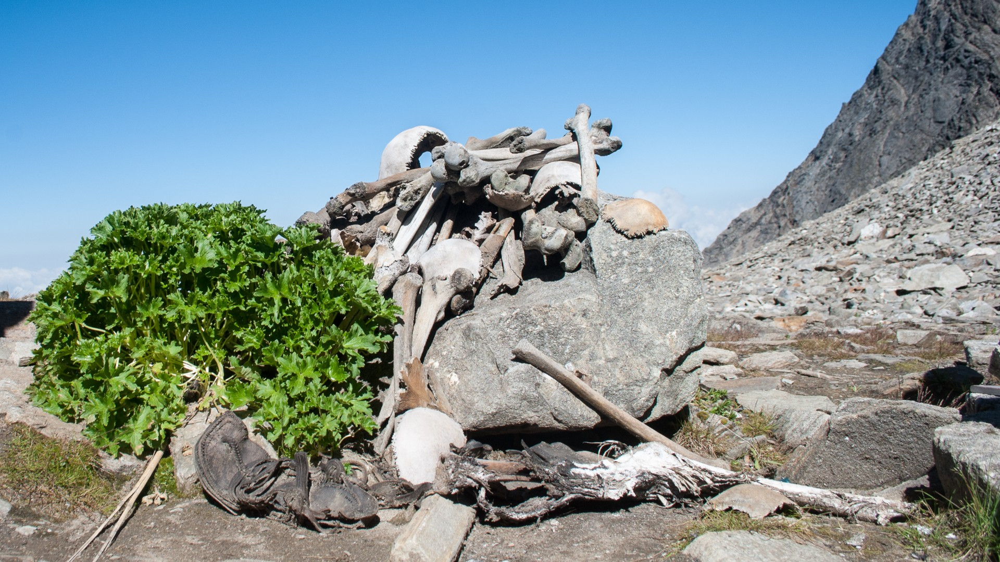
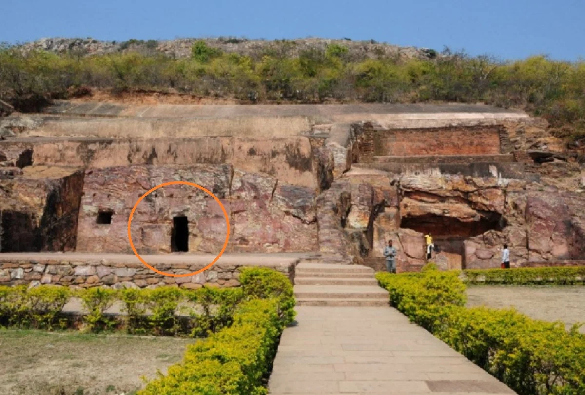

Unsolved creepy mysteries of India ...
The Kongka La Pass in Ladakh
This region lies in the disputed border of India and China, and is truly the most inaccessible places in the world. In 1962, the armies of both the countries were engaged in a severe conflict. After this, both China and India entered into an agreement according to which none will be allowed to patrol the region, but can keep an eye on it from a distance. After this, a popular belief floated that the Kongka La Pass in Ladakh is a hideous base of UFOs. The area has forever remained a no man’s land due to its territorial limits and is the reason why the UFOs have chosen it as their operational base.
Reportedly, many have seen these UFOs and both the Indian and Chinese Governments are aware of these developments. In 2006, Google Maps too baffled the world with some images that looked liked military facilities, but till date the whole issue remains mysterious and unexplainable.
Mass Bird suicide, Jatinga Assam
Jatinga is a small village in Assam and people here experience a phenomenon that is so bizarre yet mysterious. The said phenomenon is mass bird suicide. This incident takes place between the months of September and November every year; hundreds of local and migratory birds fly and crash themselves into the buildings and trees for apparently no reasons. This phenomenon still remains to be solved by the scientists and locals still believe it is the handiwork of evil spirits. This makes Jatinga a creepy destination to visit where a mystery looms over people.
Lake of skeletons

Roopkund Lake is around 16500 ft above the sea level and is also popularly known as the lake of skeletons. In 1942, the skeletal remains were first noticed when the harsh summer started melting the ice. A British forest guard noticed a huge number of human skeletons lying haphazardly and floating along the edges of the lake. Initially, the skeletons were believed to be the remains of those Japanese soldiers who were killed during war, but in 2004 this theory got a jolt. In 2004, it was discovered that the remains date back to 850 AD. Since then, several theories have been put forward to explain this incident, but people are still searching for answers. One can still see these remains during summers when the ice starts melting.
Gyanganj
Gyanganj—a city of immortals! Can you believe it? India is truly amazing to have such mysteries under its belt. There are actually several mysterious storied linked to the Himalayas because of its territorial limits. According to ancient Tibetan and Indian stories, this place is said to be the city of mysterious immortal beings. People can’t go there or get any idea about its existence. Also, it is believed that this place has camouflaged itself so brilliantly that no modern technique can help you to gain access to it. Many mahatmas and sadhus believe one can attain ultimate knowledge and serenity in this place.
The royal treasure of Jaigarh Fort

The mysterious history of Jaigarh Fort might let you wonder if such things are actually possible. The fort has the largest cannon on wheels and its history is full mysterious tales. As per the belief goes, Akbar’s Defence Minister Man Singh, while returning from Afghanistan after a successful mission, hid the spoils of war in this fort. In 1977, the fort once again came into limelight. Prime Minister Indira Gandhi during the peak of Emergency period in India ordered a thorough search of the fort. The search was carried off after a tip-off that the water tanks in the fort were used for hiding Mughal treasure. Although nothing could be found during the search operation, it received enormous publicity and the mystery still remains to be solved.
Son Bhandar cave of Bihar

The doorway to the riches! This tale is associated with the Son Bhandar cave of Bihar. The cave is said to be a single giant rock, believed to be hoarding the riches of Bimbisara, who was a Magadhan King and who loved gathering treasure. It so happened that Bimbisara’s wife hid the treasures in this cave when the King was imprisoned by his son. You will find inscriptions in Sankhlipi script inscribed on the wall. It is believed that whoever deciphers the inscriptions, he will purportedly open the doorway to the treasure. The activity of opening this doorway was once tried by the British by using their cannonball; result— the British were unsuccessful and they only managed to leave a big black mark on the wall which is still visible.
Jodhpur boom
On December 18, 2012, Jodhpur residents were in for a shock. A sudden thunderous boom startled the Jodhpur people. Nothing could be gauged, only the sense that something out of nowhere crashed like the sonic boom caused by aircrafts. The residents got worried and started asking around, but no one seemed to have witnessed anything. No planes crashed and no explosions happened. Therefore, there are no explanations associated with this mysterious Jodhpur boom. Thus, it still remains to be seen if this case will ever be resolved.
Click for feedback